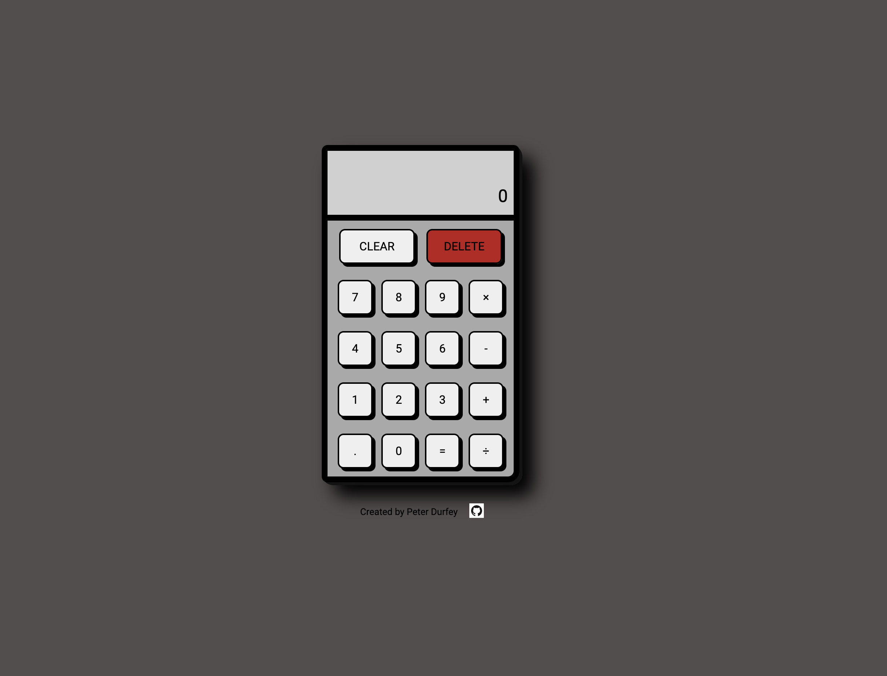
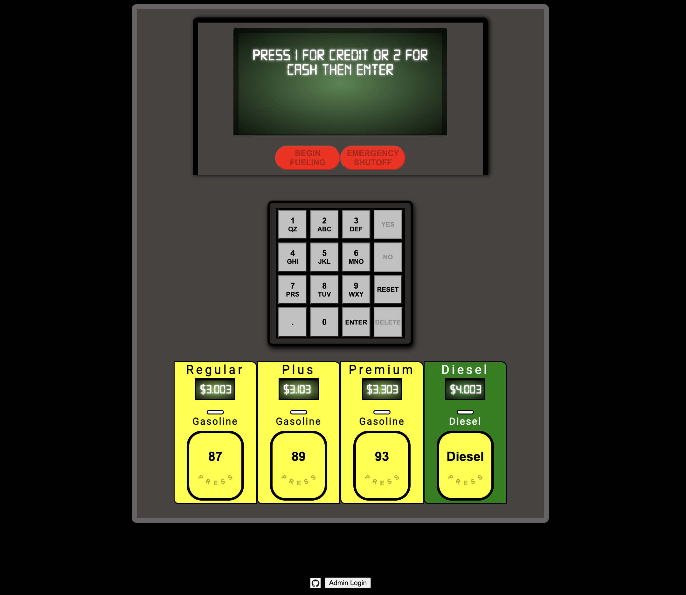
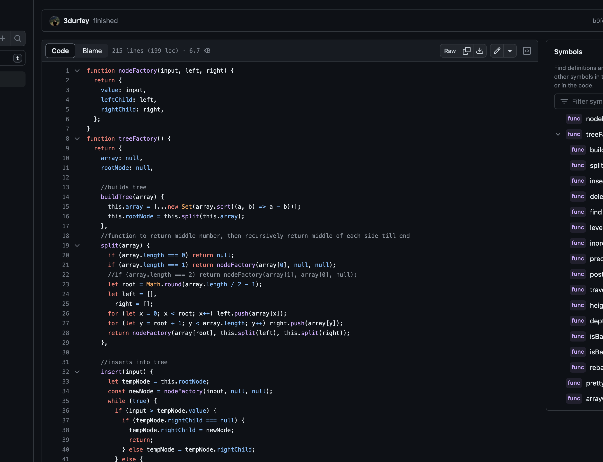

I'm Peter Durfey, and I'm an aspiring full-stack web developer with a passion for crafting digital experiences. I hold an Associate's degree in Computer Science, which has laid the foundation for my journey into the world of programming and web development. I find immense satisfaction in the process of turning lines of code into functional, user-friendly websites and applications.
Etch-A-Sketch

The Etch-a-Sketch Web Application is a fun and interactive project
that utilizes HTML, CSS, and JavaScript to recreate the classic
Etch-a-Sketch toy as a digital experience on the web. This project
aims to provide users with a nostalgic and creative way to draw and
doodle online, just like they would with the physical toy.
Todo List

This project focused on creating a user-friendly and efficient To-Do
application using HTML, CSS, and JavaScript. The goal was to provide
users with a platform to manage their tasks and stay organized
seamlessly.
Calculator

The Interactive Web Calculator is a web development project that
leverages HTML, CSS, and JavaScript to create a user-friendly and
functional calculator application accessible through a web browser.
This project aimed to provide a versatile tool for performing basic
mathematical calculations conveniently online.
Gas Pump Simulator

This Gas Pump Simulator is a web-based application developed using
JavaScript, Node.js, HTML, and CSS to create an interactive and
educational experience simulating the operation of a gas pump. This
project was designed to help users understand the process of fueling
a vehicle, including selecting fuel type, pumping gas, and
calculating the cost of the transaction.
Binary Tree

The Binary Tree Operations project is a JavaScript-based program
that focuses on creating and manipulating binary trees. It provides
essential functionalities for creating a binary tree, checking its
balance, and performing three different types of tree traversals:
preorder, inorder, and postorder.
Tic-Tac-Toe

The Unbeatable Tic-Tac-Toe Game project aimed to create an
interactive web-based game of Tic-Tac-Toe where players could
challenge an AI opponent that was designed to be unbeatable. The
project leveraged HTML, CSS, and JavaScript to deliver a seamless
gaming experience in a web browser.
Rock-Paper-Scissors

This project was created using HTML, CSS, and JavaScript. The
primary goal of this project was to provide users with an engaging
gaming experience where they could play the classic Rock, Paper,
Scissors game against a computer opponent while keeping track of
their score.
Contact Info
Email: pdurfey@icloud.com